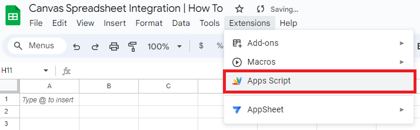
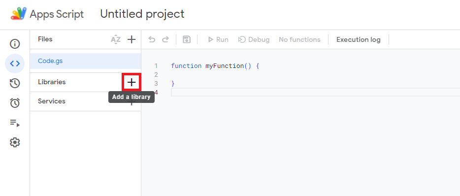

CSI (Canvas Spreadsheet Integration) is a custom script designed for seamlessly retrieving Canvas data automatically. Initially developed to
create an organized checklist for assignments and facilitate comprehensive tracking of due dates, CSI has evolved
into a robust tool.
The script automates the retrieval and update of course-related information from the Canvas API, seamlessly integrating it into a Google
Spreadsheet. It efficiently categorizes data into distinct sheets for each course, implements conditional
formatting, and improves visual comprehension through alternating row colors. Primarily tailored for individuals
enrolled in Canvas courses, CSI offers an efficient solution for managing and monitoring assignments, ensuring a
hassle-free approach to staying on top of due dates and course-related details.
This project is available on Github, for free, for
everyone. This work © 2024 by Veillax is licensed under CC BY-NC-SA 4.0. To view a copy of this license, visit http://creativecommons.org/licenses/by-nc-sa/4.0/
You can view the code here: https://script.google.com/home/projects/1Hfh8AGbsMRuu77fb8K1LTqRoGE8j98qE24k0XycFfrY94kRt3BM6EnXP
To get started with CSI, navigate to Google Sheets and create a new Blank Spreadsheet. Next, click on Extensions > Apps Script

After it loads, locate Libraries, then click on the plus

Copy the following into the Script ID slot: